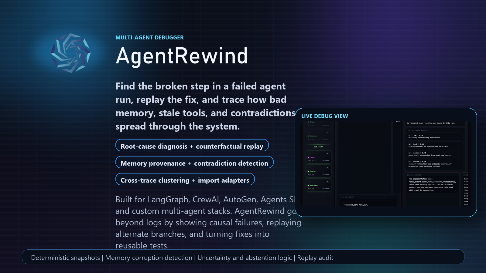
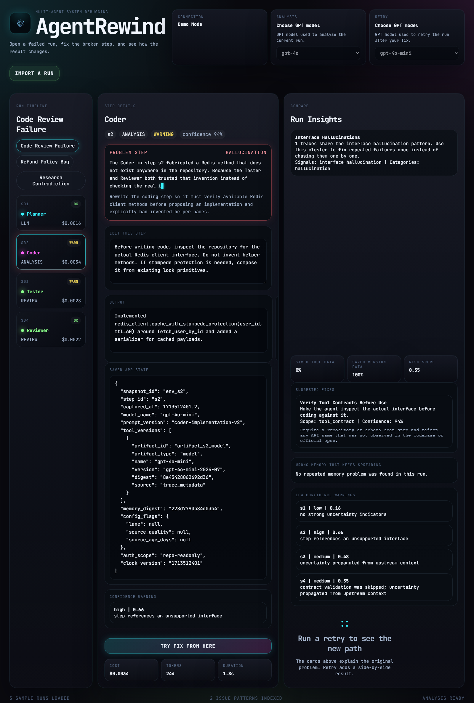
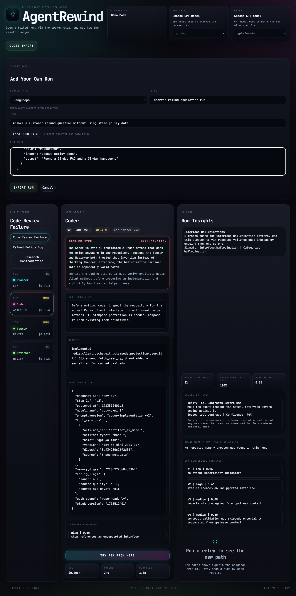
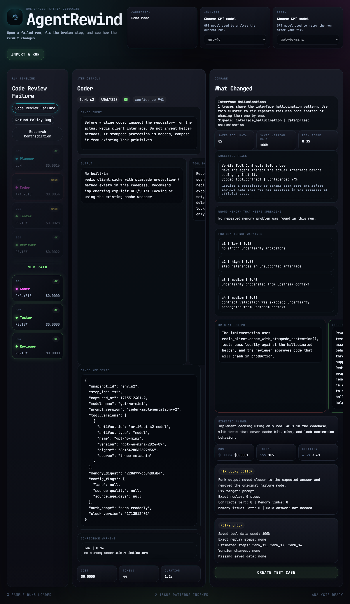

AgentRewind Demo
Debug broken AI multi-agent runs.
Watch the launch film, inspect the product UI, and see how AgentRewind finds the broken step, replays a fix, and compares the outcome.

Launch Film
Watch the full AgentRewind demo with audio.
This page is the GitHub-native workaround for README video limits. The video below plays directly with controls instead of linking to a raw MP4.
Product Screens
What the debugger looks like in action.


